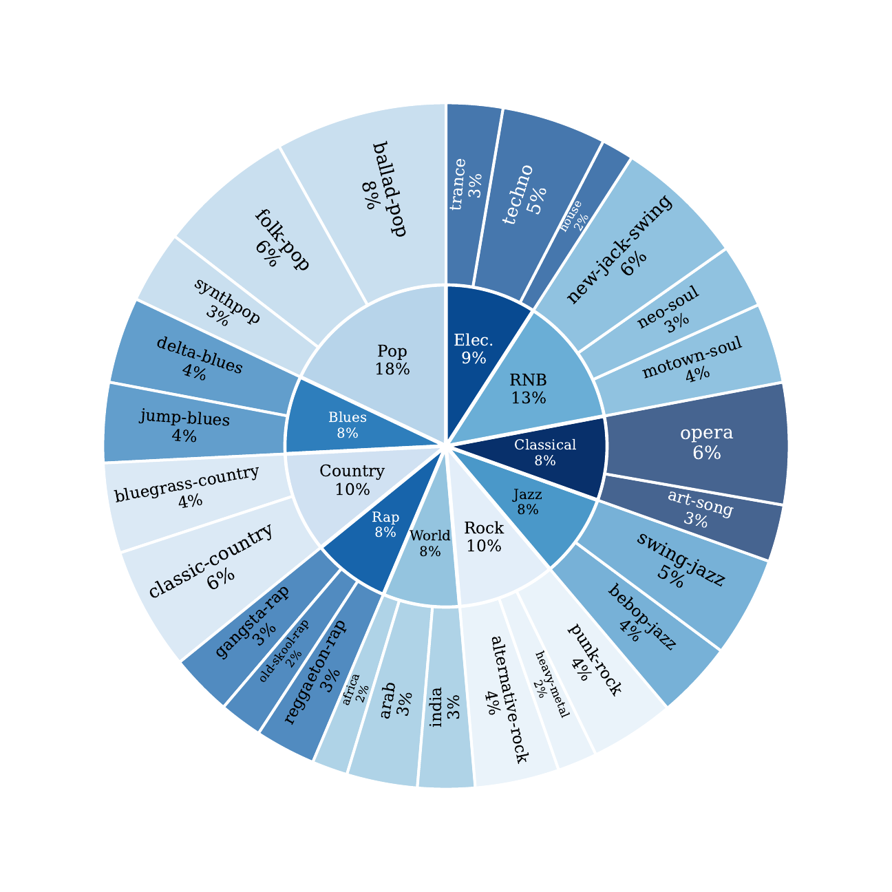
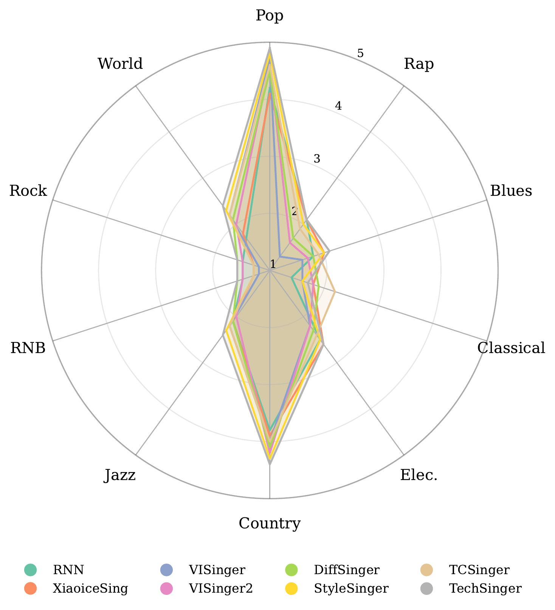

Multi-Genre SVS Benchmark
MMGenre
Benchmarking Singing Voice Synthesis across Multiple Musical Genres
MMGenre is a diagnostic benchmark for studying how singing voice synthesis systems behave across diverse musical genres. It combines genre-aligned music scores with broad genre coverage to expose limited genre discrimination in current systems.
A broad musical taxonomy
MMGenre spans ten major genres and twenty-seven subgenres, enabling controlled analysis at multiple levels of musical specificity.

02
Explore the benchmark
Genre-Aligned Examples
Each example pairs a vocal segment with its genre label, subgenre label, lyrics, and a compact pitch-duration score.
Selected sample
Lyrics
Ground Truth Vocal
Genre-Aligned Score
pitch ↑ · time →
03
A key finding
Genre Collapse in SVS
Current SVS systems often produce vocals with highly similar acoustic characteristics across genres, resulting in weak genre separability.

“
Different scores.
Different scores.
Similar voices.
Despite receiving genre-aligned scores, synthesized vocals tend to converge toward a shared acoustic profile. Listen below to compare Suno ground truth with VISinger2 across all ten genres.
Zero-shot adaptation offers only marginal gains, while lightweight genre-specific continued training is substantially more effective.
04
Publication
Citation
Accepted at Interspeech 2026
If you find MMGenre useful, please cite:
@inproceedings{feng2026mmgenre,
title={MMGenre: A Benchmark for Diagnosing Multi-Genre Singing Voice Synthesis},
author={Feng, Wenhao and Tang, Yuxun and Shi, Jiatong and Jin, Qin},
booktitle={Proceedings of Interspeech 2026},
year={2026}
}